|
На математическом кружке вместе с учащимися рассматривался ряд
задач, благодаря наглядности которых, процесс решения становится
понятным и интересным. На первый взгляд им хочется составить
систему уравнений, но в процессе решения остается много
неизвестных, что ставит их в тупик. Для того, чтобы уметь решать
эти задачи, необходимо предварительно рассмотреть некоторые
теоретические разделы теории множеств.
Введем определение множества, а так же некоторые обозначения.
Под множеством мы будем понимать такой набор, группу, коллекцию
элементов, обладающих каким-либо общим для них всех свойством
или признаком.
Множества обозначим А, В, С…, а элементы множеств а, b, с…,
используя латинский алфавит.
Можно сделать такую запись определения множества:
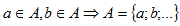 ,
где
“ 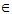 ”
– принадлежит;
“=>“ – следовательно;
“ø” – пустое множество, т.е. не содержащее ни одного
элемента.
“ υ ” – знак объединения,
“ / ” – заменяет слова ”таких что“
“∩“ – знак пересечения.
Два множества будем называть равными, если они состоят из одних
и тех же элементов
Например:
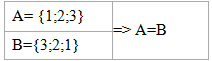
Если любой элемент из множества А принадлежит и множеству В, то
говорят, что множество А включено в множество В, или множество А
является подмножеством множества В, или А является частью В,
т.е. если 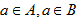 ,
то 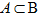 ,
где “С” знак подмножества или включения.
Графически это выглядит так (рис.1):
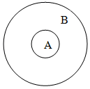
(рис.1)
Можно дать другое определение равных множеств. Два множества
называются равными, если они являются взаимными подмножествами.
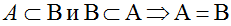
Рассмотрим операции над множествами и их графическую иллюстрацию
(рис.2).
Объединением множеств А и В называется множество С, образованное
всеми элементами, которые принадлежат хотя бы одному из множеств
А или В. Слова “или ” ключевое в понимании элементов входящих в
объединение множеств.
Это определение можно записать с помощью обозначений:
А υ В, где 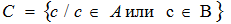
где “ υ ” – знак объединения,
“ / ” – заменяет слова ”таких что“
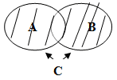
(рис.2)
Пресечение двух множеств А и В называется множество С,
образованное всеми элементами, которые принадлежат и множеству
А, и множеству В. Здесь уже ключевое слово “и”. Запишем коротко:
А ∩ В = С, где
“∩“ – знак пересечения. (рис.3)
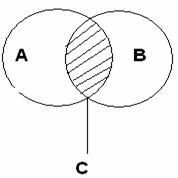
(рис.3)
Обозначим буквой Е основное или универсальное множество, где 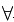 A
С Е (“”-
любо число), т.е. А  Е
= Е; АЕ
=А Е
= Е; АЕ
=А
Множество всех элементов универсального множества Е, не
принадлежащих множеству А называется дополнением множества А до
Е и обозначается ĀЕ или
Ā (рис.4)
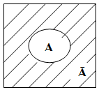 Е
(рис.4)
Примерами для понимания этих понятий являются свойства:
_
А Ā=Е
Ø = Е Е Ā=Ā
_
А ∩ Ā= Ø Ē = Ø
(Ā)=А
Свойства дополнения имеют свойства двойственности:
________ _ _
АВ
= А∩В
________ _ _
АВ
= АUВ
Введем еще одно понятие – это мощность множества.
Для конечного множества А через m (A) обозначим число элементов
в множестве А.
Из определение следуют свойства:
m (A) + m (Ā) = m (E)
А = В => m(A) = m(B)
Для любых конечных множеств справедливы так же утверждения:
m (AB)
=m (A) + m (В) – m (А∩В)
m (A∩B) = m (A) + m (В) – m (АВ)
m (ABC)
= m (A) + m (В) + m (С)– m (А∩В) - m (А∩С) – m (В∩С) – m
(А∩В∩С).
А теперь рассмотрим ряд задач, которые удобно решать, используя
графическую иллюстрацию.
Задача №1
В олимпиаде по математике для абитуриентов приняло участие 40
учащихся, им было предложено решить одну задачу по алгебре, одну
по геометрии и одну по тригонометрии. По алгебре решили задачу
20 человек, по геометрии – 18 человек, по тригонометрии – 18
человек.
По алгебре и геометрии решили 7 человек, по алгебре и
тригонометрии – 9 человек. Ни одной задачи не решили 3 человека.
- Сколько учащихся решили
все задачи?
- Сколько учащихся решили
только две задачи?
- Сколько учащихся решили
только одну задачу?
Задача № 2
Первую или вторую контрольные работы по математике успешно
написали 33 студента, первую или третью – 31 студент, вторую или
третью – 32 студента. Не менее двух контрольных работ выполнили
20 студентов.
Сколько студентов успешно решили только одну контрольную работу?
Задача № 3
В классе 35 учеников. Каждый из них пользуется хотя бы одним из
видов городского транспорта: метро, автобусом и троллейбусом.
Всеми тремя видами транспорта пользуются 6 учеников, метро и
автобусом – 15 учеников, метро и троллейбусом – 13 учеников,
троллейбусом и автобусом – 9 учеников.
Сколько учеников пользуются только одним видом транспорта?
Решение задачи № 1
Запишем коротко условие и покажем решение:
- m (Е) = 40
- m (А) = 20
- m (В) = 18
- m (С) = 18
- m (А∩В) = 7
- m (А∩С) = 8
- m (В∩С) = 9
___________
m (АВС)
= 3 => m (АВС)
= 40 – 3 = 37
Обозначим разбиение универсального множества Е множествами А, В,
С (рис.5).

(рис.5)
К1 –
множество учеников, решивших только одну задачу по алгебре;
К2 –
множество учеников, решивших только две задачи по алгебре и
геометрии;
К3 –
множество учеников, решивших только задачу по геометрии;
К4 –
множество учеников, решивших только две задачи по алгебре и
тригонометрии;
К5 –
множество всех учеников, решивших все три задачи;
К6 –
множество всех учеников, решивших только две задачи, по
геометрии и тригонометрии;
К7 –
множество всех учеников, решивших только задачу по
тригонометрии;
К8 –
множество всех учеников, не решивших ни одной задачи.
Используя свойство мощности множеств и рисунок можно выполнить
вычисления:
- m (К5)
= m (А∩В∩С)= m (АВС)
- m (А) - m (В) - m (С) + m (А∩В) + m (А∩С) + m (В∩С)
- m (К5)
= 37-20-18-18+7+8+9=5
- m (К2)
= m (А∩В) - m (К5)
= 7-5=2
- m (К4)
= m (А∩С) - m (К5)
= 8-5=3
- m (К6)
= m (В∩С) - m (К5)
= 9-5=4
- m (К1)
= m (А) - m (К2)
- m (К4)
- m (К5)
= 20-2-3-5=10
- m (К3)
= m (В) - m (К2)
- m (К6)
- m (К5)
= 18-2-4-5=7
- m (К7)
= m (С) - m (К4) - m (К6)
- m (К5)
= 18-3-4-5 =6
- m (К2)
+ m (К4)
+ m (К6) = 2+3+4=9 – число учеников решивших только две
задачи;
- m (К1)
+ m (К3)
+ m (К7)
= 10+7+6=23 – число учеников решивших только одну задачу.
Ответ:
5 учеников решили три
задачи;
9 учеников решили только по
две задачи;
23 ученика решили только по
одной задаче.
С помощью этого метода можно записать решения второй и третьей
задачи так:
Решение задачи № 2
- m (АВ)
= 33
- m (АС)
= 31
- m (ВС)
= 32
- m (К2)
+ m (К4)
+ m (К6)
+ m (К5)
= 20
Найти m (К1)
+ m (К3)
+ m (К7)
- m (АUВ) = m (К1)
+ m (К2)
+ m (К3)
+ m (К4)
+ m (К5)
+ m (К6)
= m (К1)
+ m (К3)
+ 20 = 33 =>
- m (К1)
+ m (К3)
= 33 – 20 = 13
- m (АUС) = m (К1)
+ m (К4)
+ m (К2)
+ m (К5)
+ m (К6)
+ m (К7)
= m (К1)
+ m (К7)
+ 20 = 31 =>
- m (К1)
+ m (К7)
= 31 – 20 = 11
- m (ВUС) = m (К3)
+ m (К2)
+ m (К5)
+ m (К6)
+ m (К7)
+ m (К4)
= m (К3)
+ m (К7)
+ 20 = 32 =>
- m (К3)
+ m (К7)
= 32 – 20 = 12
- 2m (К1)
+ m (К3)
+ m (К7)
= 13+11=24
- 2m (К1)
+ 12 = 24
-
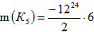
- m (К3)=
13-6=7
- m (К7)=12-7=5
- m (К1)
+ m (К3)
+ m (К7)
= 6+7+5=18
Ответ:
Только одну контрольную работу решили 18 учеников.
Решение задачи № 3
- m (Е) = 35
- m (А∩В∩С)= m (К5)
= 6
- m (А∩В)= 15
- m (А∩С)= 13
- m (В∩С)= 9
Найти m (К1) + m (К3) + m (К7)
- m (К2)
= m (А∩В) - m (К5)
= 15-6=9
- m (К4)
= m (А∩С) - m (К5)
= 13-6=7
- m (К6)
= m (В∩С) - m (К5)
= 9-6=3
- m (К1)
+ m (К3)
+ m (К7)
= m (Е) - m (К4)
- m (К2)
- m (К6)
- m (К5)
= 35-7-9-3-6=10
Ответ:
Только одним видом
транспорта пользуется 10 учеников.
|